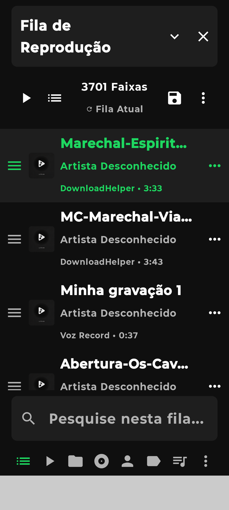
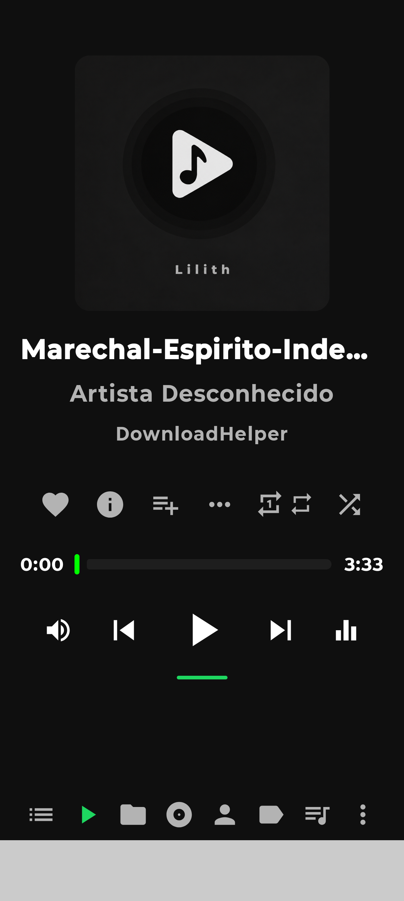
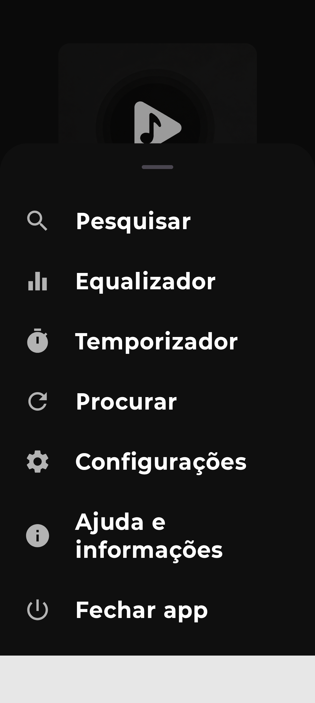

🎵 Lilith EM BREVE
🚧 Em desenvolvimento: O Lilith ainda está em fase de desenvolvimento e não foi publicado no Google Play. Em breve estará disponível para download. Fique de olho!
O Lilith é um player de música offline feito para quem quer simplicidade, velocidade e estilo na hora de ouvir suas faixas favoritas. Sem depender de internet, sem cadastro, sem complicação — só você e a sua playlist.
Com uma interface moderna, suporte a temas Claro e Escuro e reprodução fluida, o Lilith transforma sua biblioteca local em uma experiência de audição premium. Ideal para quem tem músicas no celular e quer um player leve, bonito e funcional.
✨ Funcionalidades Previstas
- Reprodução 100% offline — toque suas músicas sem precisar de internet
- Leitura automática da biblioteca local do dispositivo
- Interface moderna e intuitiva
- Suporte a temas Claro e Escuro
- Controles de reprodução completos (play, pause, próxima, anterior, shuffle)
- Player em segundo plano com notificação
- Rápido, leve e sem anúncios invasivos
- Sem cadastro, sem login, sem coleta de dados pessoais
🎧 Para quem é o Lilith?
- Quem guarda músicas no celular e quer um player bonito e funcional
- Quem está cansado de apps pesados que exigem conta e internet
- Quem valoriza privacidade e quer um app que não rastreia
- Quem gosta de um design moderno com tema claro/escuro
📸 Screenshots (Prévia)
Imagens ilustrativas do desenvolvimento. Podem mudar até o lançamento.



❓ Perguntas Frequentes
Quando o Lilith será lançado?
O Lilith será gratuito?
Precisarei de internet para usar?
O app vai baixar músicas da internet?
Precisarei criar conta ou fazer login?
Quais formatos de áudio serão suportados?
Meus dados serão coletados?
Como reporto um erro ou sugiro uma melhoria?
📜 Status do Desenvolvimento
🚧 Em desenvolvimento
- Interface moderna com temas Claro e Escuro
- Reprodução de músicas locais (offline)
- Leitura automática da biblioteca do dispositivo
- Controles de reprodução completos
- Player em segundo plano com notificação
📅 Próximos passos
- Testes finais de estabilidade
- Revisão da interface
- Publicação no Google Play
🔒 Privacidade
O Lilith não coletará dados pessoais, não exigirá cadastro e não acessará a internet para tocar suas músicas. Sua biblioteca musical e histórico ficarão apenas no seu dispositivo. Saiba mais na política abaixo.